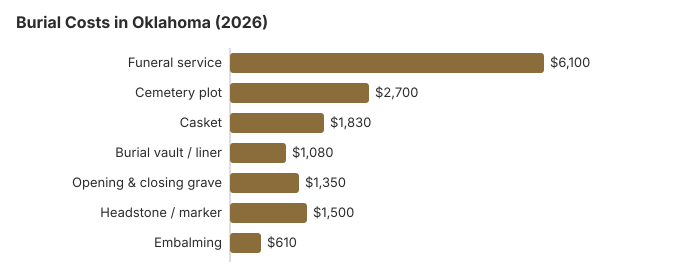

Burial Costs in Oklahoma (2026)
Burial is still a common choice in Oklahoma, and it pays to know the numbers before meeting a funeral home. Our 2026 estimate for a complete Oklahoma burial is $13,560 to $18,060, and the casket and the choice of cemetery are where comparison shopping saves the most. Below are the item prices, Oklahoma's perpetual care rules, county help with the grave, and the veterans cemeteries.
What an Oklahoma Burial Costs, Item by Item
| Expense | Oklahoma estimate | Common range |
|---|---|---|
| Funeral service | $6,100 | $4,575 – $7,930 |
| Cemetery plot | $2,700 | $1,350 – $5,400 |
| Casket | $1,830 | $610 – $4,880 |
| Burial vault / liner | $1,080 | $800 – $10,000 |
| Opening & closing grave | $1,350 | $500 – $3,000 |
| Headstone / marker | $1,500 | $500 – $5,000+ |
| Embalming | $610 | $500 – $1,500 |
About these Oklahoma estimates: they come from our price model rather than a survey of Oklahoma funeral homes and cemeteries, so they are not a quote or professional advice. Learn more in our method and the disclaimer.

Counting all cemetery fees, an Oklahoma burial typically comes to $13,560 to $18,060, and the choices you make decide where in that range it falls.
Church and Family Cemeteries in Oklahoma
Across much of Oklahoma, church and family cemeteries still sit alongside commercial ones, and many congregations keep plot prices low for members. We estimate the saving from a church or family plot at over $1,080 against a private cemetery.
Burial Resources
- Funeral Consumers AllianceNonprofit consumer advocacy for funeral pricing
- Headstone & Monument GuideCosts, types, and buying tips
- Green Burial OptionsEco-friendly and natural alternatives
- Best Online Casket RetailersCaskets bought online often cost less
- Best Burial InsuranceCompare plans to cover burial expenses
Compare Funeral Costs
- Average Funeral Cost in 2026National cost breakdown with real prices
- Cremation vs. Burial Cost ComparisonSide-by-side price comparison to help you decide
- Funeral Cost BreakdownEvery line item explained: know what you're paying for
- Cheapest Funeral OptionsLower-cost alternatives, with typical price ranges
- Direct Cremation: Most Affordable OptionNFDA 2023 median $2,645 with a family-supplied container (latest available)
- How to Compare Funeral PricesStep-by-step guide to getting the best price
Types of Burial in Oklahoma
Ways to Save on an Oklahoma Burial
Where an Oklahoma family can save:
- Get each cemetery's price sheet. The FTC Funeral Rule does not cover cemeteries, but most Oklahoma cemeteries will give you their prices if asked.
- Ask about church and family plots. These are still common in rural Oklahoma and often cost less than plots in commercial memorial parks.
- Look at veterans cemeteries. Before buying a plot for a veteran, check Fort Gibson and Fort Sill National Cemeteries and the tribal veterans cemeteries.
Frequently Asked Questions
How much does burial cost in Oklahoma?
A traditional burial in Oklahoma runs about $6,100 for the funeral service and $2,700 for a cemetery plot. Add a burial vault ($1,080), opening and closing ($1,350), a casket ($1,830) and a headstone ($500-$5,000), and the total usually lands between $13,560 and $18,060. Before buying a plot, note 8 O.S. §188. An unused burial space with no recorded activity for 75 years can revert to the cemetery after certified notice and newspaper publication. Keep the deed and contact details current.
Does Oklahoma require a burial vault?
No. Oklahoma law has no vault requirement, but a cemetery may require an outer container in its rules, and a liner usually meets that rule for less. Get the requirement in writing and ask whether you may provide the container yourself.
If only the cemetery requires a vault, an Oklahoma funeral home may not tell you the law does (FTC Funeral Rule, 16 CFR 453.3(c)). For questions about a perpetual-care cemetery's trust fund, contact the Oklahoma Insurance Department (800-522-0071), which oversees those funds under 36 O.S. § 7103.
Which Oklahoma burial costs the least?
Direct burial. With no embalming, viewing or service at the funeral home, it is generally the cheapest option an Oklahoma funeral home offers. A casket bought elsewhere is allowed, and the FTC Funeral Rule prohibits a handling fee for one. For a veteran who qualifies, Fort Gibson or Fort Sill National Cemetery provides the grave, its opening and the headstone free.
What should I ask Oklahoma cemeteries?
Ask about the burial space, opening and closing, the vault or liner and setting the marker, and whether the cemetery is a perpetual-care cemetery. Under Oklahoma's Perpetual Care Fund Act (36 O.S. §§ 7101–7112), such cemeteries must put 10% of each burial-space sale into a trust or pledged deposit for upkeep, and they hold permits from the Oklahoma Insurance Department.
For complaints about a cemetery's upkeep, contact the Attorney General's Consumer Protection Unit rather than the Funeral Board. The Oklahoma Funeral Board (405-522-1790) handles the funeral home's part of the same burial.
What is the full price of an Oklahoma burial?
All together, an Oklahoma burial usually totals $13,560 to $18,060: the funeral service is about $6,100, the plot $2,700, the casket $1,830, the vault $1,080, opening and closing $1,350, and the headstone $500-$5,000.
Can Oklahoma families choose green burial?
Some Oklahoma cemeteries offer green burial sections that require a biodegradable container and no embalming or vault; the overall cost is usually lower than a conventional burial. If none is close by, a family can buy an ordinary plot and choose not to embalm.
More for Oklahoma
Moving a grave in Oklahoma: permit or five-day notice
An out-of-state burial-transit permit that travels with a body is enough to allow burial in Oklahoma. Moving a body after burial is where the state steps in: a disinterment permit from the Commissioner of Health is required, issued to a licensed funeral director or embalmer, and the application must include the consent of the next of kin in the priority order set by 21 O.S. § 1158 (63 O.S. § 1-319; checked October 29, 2026).
- Same cemetery: no disinterment permit is needed to move a grave within the same cemetery, but a notice of disinterment and reinterment, signed by the funeral director and the next of kin, must reach the State Department of Health within 5 days.
- Forms: both the permit application and the notice come from the Department of Health.
Oklahoma's Funeral Board, county help and veterans cemeteries
To check a license or complain about a funeral home arranging a burial, call the Oklahoma Funeral Board at 405-522-1790. Cemeteries are handled elsewhere: perpetual care trust funds by the Insurance Department, and upkeep complaints by the Attorney General.
Oklahoma law lets a family arrange a burial without hiring a funeral director, which is why the Funeral Consumers Alliance leaves it off its list of nine restrictive states. The family still needs the burial permit and has to meet the cemetery's rules for the grave.
There is no waiting period for burial. If plans change to cremation, Oklahoma sets no fixed wait, but a permit is required (63 O.S. § 1-329.1).
County help
For an indigent burial, an Oklahoma county pays the reasonable cost of opening and closing the grave when the county commissioners order it (56 O.S. § 54). (Source: 56 O.S. § 54.) Separately, Social Security pays a one-time $255 to a qualifying spouse or child who claims it within two years; the money goes to them, not to the cemetery.
Veterans
A qualifying veteran receives a grave, opening and closing, a liner and a headstone at no cost in a national cemetery. Oklahoma's two VA national cemeteries are Fort Gibson (918-478-2334) and Fort Sill (580-492-3200). Tribal veterans cemeteries include the Seaman First Class Billy Turner Veterans Cemetery (580-490-6489), the Seminole Nation and Veterans Memorial Cemetery (405-295-4549) and White Eagle Cemetery (580-762-8104) (source: VA National Cemetery Administration).
Oklahoma next steps
- Have both price lists in hand, the funeral home's and the cemetery's, before you sign for an Oklahoma burial.
- Ask the cemetery whether it requires an outer burial container, and whether a liner will do, before you buy one.
- For an indigent burial, ask the county commissioners about the grave-opening cost, which the county treasurer pays on their order.
- For a veteran, have the DD214 ready and call Fort Gibson National Cemetery.
- If a funeral home misprices a burial, call the board at 405-522-1790.